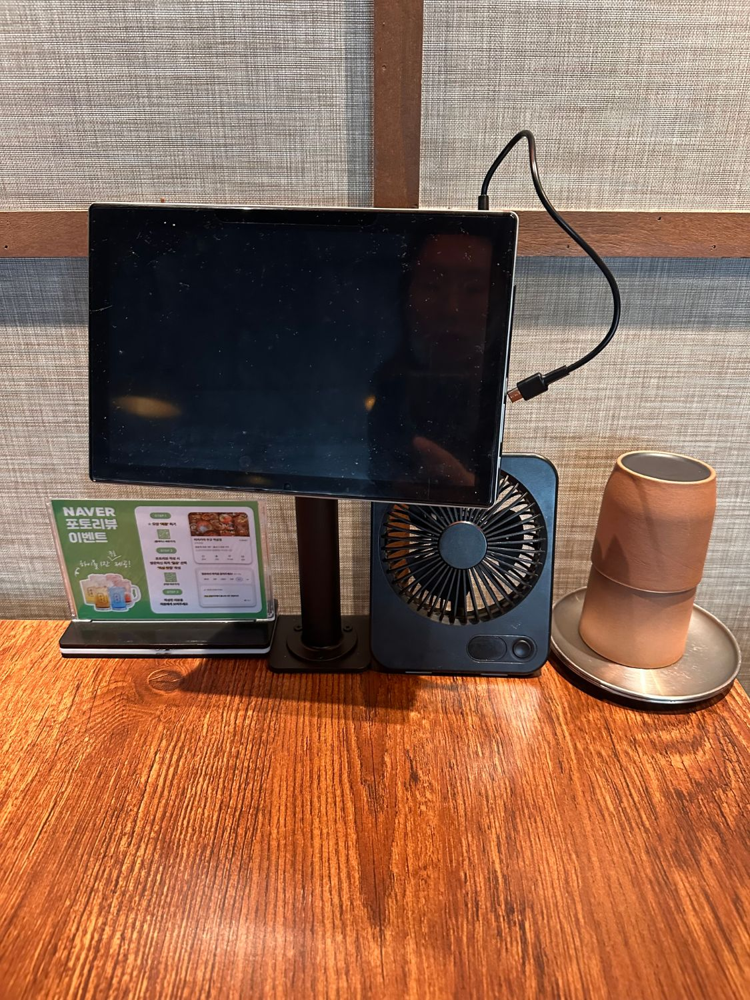
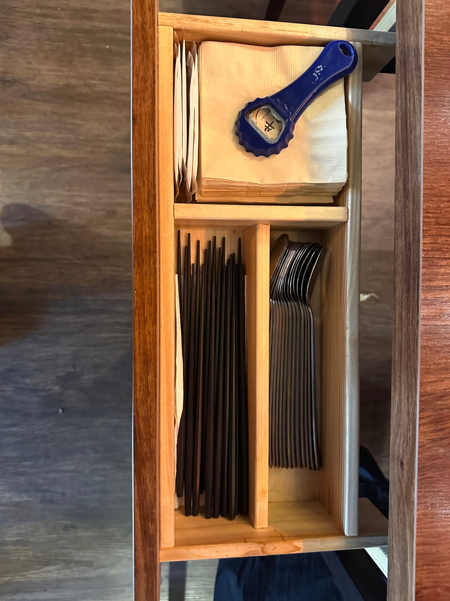

우규 홀 운영 및 테이블 세팅 매뉴얼
현장 사진 기반 표준 운영 방침 · 전 직원 공용
v2
1
고객 맞이 및 인원별 기본 세팅
입점 인사
손님이 오시면
전 직원이 큰 소리
로 친절하게 맞이 —
"반갑습니다! 어서오세요!"
인원 확인
방문 시 몇 분이신지 먼저 정중히 여쭤봅니다.
세팅 변경
기본은
2인 세팅
기준.
3인 방문 시
컵 1개·앞접시 1개
추가 제공.
기본 찬 출하
인원 확인·조율 후
물과 콩
을 기본 세팅으로 즉시 손님상에 냅니다.
좌석 안내
20대 친구모임 등
소음 컴플레인 가능성이 있는 고객은
안쪽 분리된 공간
으로 안내합니다.

테이블 정렬·캐치테이블 상태
2
캐치테이블 및 고객 부름 응대
매장 내 캐치테이블 태블릿 시스템이 구비되어 있으나, 손님이 직접 말로 부르시는 경우도 항상 대비합니다.
손님이 부르시면 매장 어디서나 들리도록
큰 소리로
"네!"
신속하게 답변합니다.
정중하고 정성스러운 느낌을 주도록
빠른 걸음
으로 고객 테이블에 다가갑니다.
도착하면
허리를 살짝 굽히며
공손한 톤으로
"필요하신 거 있으실까요?"
여쭌 후 신속히 처리합니다.
3
퇴점 테이블 정리 및 상단 세팅
손님이 가신 테이블은 즉시 식기류를
퇴점 카트
로 정리하고
알코올/행주
로 깨끗이 닦아냅니다.
다음 손님 배치를 위해 상단에
컵 2개·앞접시 2개
를 규격에 맞춰 정갈하게 먼저 세팅합니다.
서랍 내부의 집기류 세팅 상태를 다시 점검하여 채워 넣습니다.
마지막으로 테이블 주변의
의자 정돈(안쪽으로 정렬)
을 바르게 하여 마무리합니다.
4
서랍 내 집기류 세팅 가이드
(실물 사진 기준)
※ 집기류 수납 서랍 구성 — 사진 배치 준수
왼쪽 상단
젓가락
젓가락을
가로 방향
으로 정갈하고 넉넉하게 정돈하여 채워둡니다.
오른쪽 상단
물티슈
물티슈를 정확히
5개
날개로 깔끔하게 겹쳐서 적재합니다.
왼쪽 하단
숟가락
숟가락
머리 방향
을 맞추어 정갈하게 포개어 세팅합니다.
오른쪽 하단
티슈·병따개
티슈를 세팅하고, 그 위에 Cass 병따개를
대각선 아래 방향
으로 가지런히 배치합니다.

수저 서랍 표준 세팅 모습